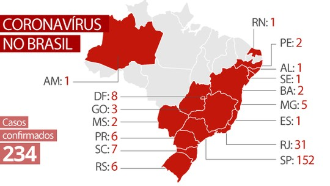

Situação do Brasil diante a pandemia
São Paulo segue liderando, com 164 casos. O estado vem seguido do Rio de Janeiro (33), Distrito Federal (22), Pernambuco (16) e Rio Grande do Sul (10). Também possuem casos Santa Catarina e Minas Gerais (sete), Goiás e Paraná (seis), Ceará (cinco), Sergipe e Mato Grosso do Sul (quatro), Bahia (três) e Amazonas, Rio Grande do Norte, Alagoas e Espírito Santo (um).

Do total, 57% são casos importados (aqueles contraídos fora do país), 32% são oriundos de transmissão local (adquiridos de pessoas que foram infectadas fora do país) e 12% são resultado de transmissão comunitária (quando as autoridades não conseguem identificar a cadeia de infecção e o primeiro paciente ou quando já ultrapassou a quinta geração da rede de contágio). Outros 2% ainda estão em investigação.
O ministro da Saúde, Luiz Henrique Mandetta, confirmou a primeira morte por Covid-19 em São Paulo. "Em quase 300 casos tivemos primeiro óbito. Não podemos falar isso porque podemos ter seis óbitos amanhã. Não temos condição de falar a letalidade. Brasil é um país jovem, vamos ver como isso funciona", declarou.
Como surgiu? Clique Aqui
O que é o Corona Virus? Clique Aqui
Como se previnir? Clique Aqui